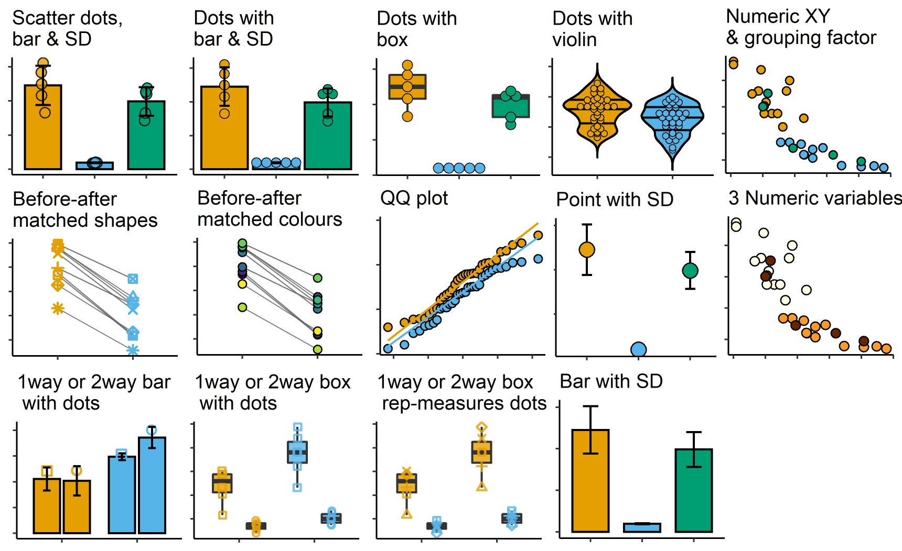

NA
Installation
To install this package use the following steps. You’ll need the package remotes installed first, skip to the second step if you already have it.
install.packages("remotes") #install remotes
remotes::install_github("ashenoy-cmbi/grafify@*release", dependencies = T) #install latest release with dependenciesgrafify depends on ggplot2, lmerTest, emmeans, car, pbkrtest, tidyr, purrr and Hmisc packages.
Motivation

The main goals of this package, besides making it easier for me to share data and functions for the statistics workshop, are the following:
- easily make common types of grafs based on
ggplot2but with fewer lines of code - carry out ANOVA analysis using linear models and mixed effects
- perform different kinds of post-hoc comparisons
- simulate simple one-way and two-way ANOVA design data
Features
grafify has four main kinds of functions as follows.
-
Making graphs easily using 14
plot_functions of 5 broad types- using two variables:
plot_scatterbar_sd,plot_dotbar_sd,plot_dotbox,plot_dotviolin - using three or four variables:
plot_3d_scatterbar,plot_3d_scatterbox,plot_4d_scatterbox - using 3 variables where 2 are quantiative:
plot_xy_NumGroup,plot_xy_CatGroup(new in v0.2.0) - before-after graphs of matched data:
plot_befafter_colours,plot_befafter_shapes - QQ plot to check distribution:
plot_qqline - summary graphs with SD error bars:
plot_bar_sd,plot_point_sd
- using two variables:

The following qualitative and continuous palettes are implemented in grafify:

(The continuous colour scheme based on Paul Tol’s YlOrBl variant is new in v0.2.0.)
-
Fitting linear models and linear mixed models and obtaining ANOVA tables
- linear models for ordinary ANOVAs:
simple_anova,simple_model, - linear mixed effects ANOVAs:
mixed_anova,mixed_model
- linear models for ordinary ANOVAs:
-
Perform post-hoc comparisons based on fitted models
posthoc_Pariwiseposthoc_Levelwiseposthoc_vsRef
-
Generating random one-way and two-way data based on mean and SD.
- one-way designs:
make_1way_data,make_1way_rb_data - two-way designs:
make_2way_data,make_2way_rb_data
- one-way designs:
-
Colour-blind compatible schemes:
Vignettes
Visit the grafify vignettes website for detailed examples of usage.
Companion website
If you’re interested in basic stats in R, also visit Statistics for Micro/Immuno Biologists.
Release notes
Full reference to all functions available at grafify pages.
Fixed in v0.2.1:
- Bug fixes in
plot_3d_scatterbarandplot_3d_scatterbox, which now correctly use the “shapes” variable to fill colour of bars/boxes and shape of the symbols; symbols are depicted in black. -
simple_anovagenerates type II ANOVA table throughcar::Anova(), which is now a dependency. v0.1.0 and v0.2.0 generated type I ANOVA table throughstats::anova().
New in v0.2.0:
- the main difference from v0.1.0 is that all
plot_functions apply theall_grafifycolour scheme by default (seeplot_vignettes on how to change colours) - two new types of grafs are possible with two quantitative X-Y plots with a third variable that is either numeric (
plot_xy_NumGroup) or categorical (plot_xy_CatGroup). - there are two new continuous colour schemes (
scale_fill_grafify_candscale_colour_grafify_c), based on Paul Tol’s variant of YlOrBl scheme.